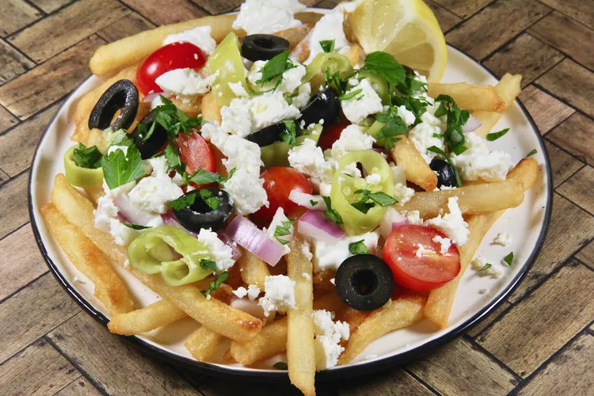

Greek Loaded Fries

Description
Get a head start on this dish by using frozen French fries for a quick and fresh weeknight meal. There will be smiles all around the dinner table.
Ingredients
- 1 (26 ounce) package frozen French fries (such as Ore-Ida®)
- salt and ground black pepper to taste
- ⅔ cup tzatziki sauce
- ⅔ cup chopped red onion
- ⅔ cup sliced banana peppers, drained
- 15 Kalamata olives, pitted and sliced
- 15 grape tomatoes, sliced
- ⅔ cup crumbled feta cheese
- 1 tablespoon chopped fresh parsley, or to taste
- 5 lemon wedges
Steps
- Preheat the oven to 450 degrees F (230 degrees C). Spread French fries on a baking sheet.
- Bake in the preheated oven until golden brown and crispy, 10 to 12 minutes. Sprinkle salt on potatoes when they come out of the oven.
- Divide French fries evenly among plates and drizzle with tzatziki sauce. Top with red onion, banana peppers, olives, tomatoes, and feta cheese. Garnish with fresh parsley, season with salt and pepper, and serve immediately with fresh lemon wedges.